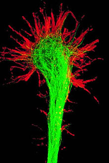

Развитие и рост нейронаВопрос о делении нейронов в настоящее время остаётся дискуссионным. По одной из версий нейрон развивается из небольшой клетки-предшественницы, которая перестаёт делиться ещё до того, как выпустит свои отростки. Первым начинает расти аксон, а дендриты образуются позже. На конце развивающегося отростка нервной клетки появляется утолщение, которое прокладывает путь через окружающую ткань. Это утолщение называется конусом роста нервной клетки. Он состоит из уплощенной части отростка нервной клетки с множеством тонких шипиков. Микрошипики имеют толщину от 0,1 до 0,2 мкм и могут достигать 50 мкм в длину, широкая и плоская область конуса роста имеет ширину и длину около 5 мкм, хотя форма её может изменяться. Промежутки между микрошипиками конуса роста покрыты складчатой мембраной. Микрошипики находятся в постоянном движении — некоторые втягиваются в конус роста, другие удлиняются, отклоняются в разные стороны, прикасаются к субстрату и могут прилипать к нему. Конус роста
Конус роста заполнен мелкими, иногда соединёнными друг с другом, мембранными пузырьками неправильной формы. Под складчатыми участками мембраны и в шипиках находится плотная масса перепутанных актиновых филаментов. Конус роста содержит также митохондрии, микротрубочки и нейрофиламенты, аналогичные имеющимся в теле нейрона. Микротрубочки и нейрофиламенты удлиняются главным образом за счёт добавления вновь синтезированных субъединиц у основания отростка нейрона. Они продвигаются со скоростью около миллиметра в сутки, что соответствует скорости медленного аксонного транспорта в зрелом нейроне. Поскольку примерно такова и средняя скорость продвижения конуса роста, возможно во время роста отростка нейрона в его дальнем конце не происходит ни сборки, ни разрушения микротрубочек и нейрофиламентов. Новый мембранный материал добавляется у окончания. Конус роста — это область быстрого экзоцитоза и эндоцитоза, о чём свидетельствует множество находящихся здесь пузырьков. Мелкие мембранные пузырьки переносятся по отростку нейрона от тела клетки к конусу роста с потоком быстрого аксонного транспорта. Мембранный материал, синтезируется в теле нейрона, переносится к конусу роста в виде пузырьков и включается здесь в плазматическую мембрану путём экзоцитоза, удлиняя таким образом отросток нервной клетки. Росту аксонов и дендритов обычно предшествует фаза миграции нейронов, когда незрелые нейроны расселяются и находят себе постоянное место Вернуться на главную |